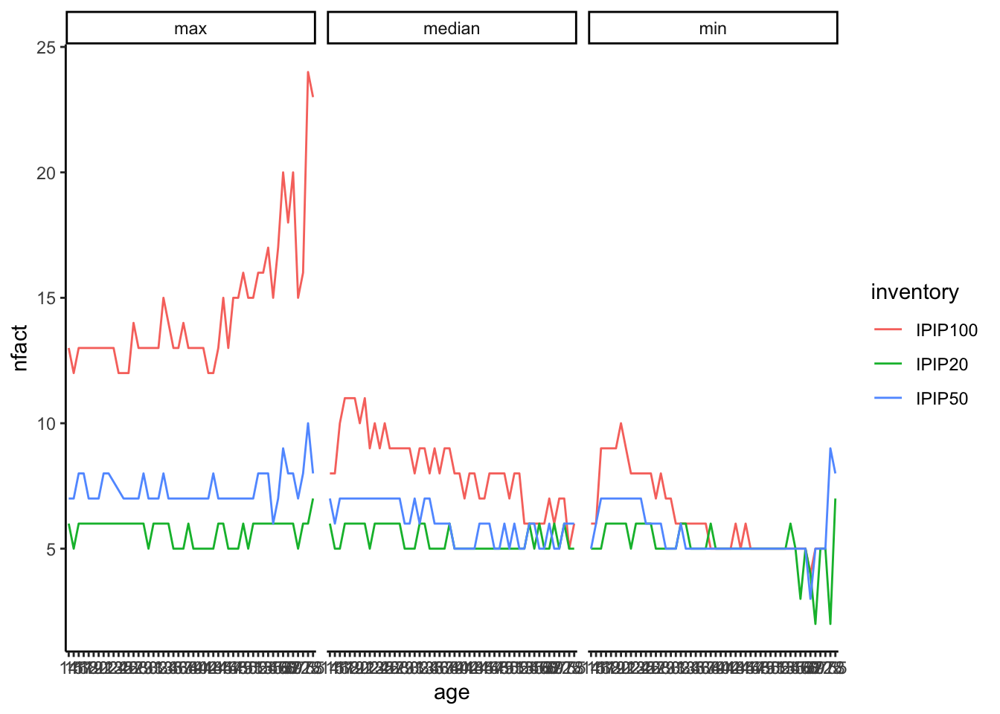

Chapter 9 Supplementary Analyses: Exploratory Factor Analysis
efa_fun <- function(inventory, set, age, rule){
loadRData <- function(inventory, set, age){
#loads an RData file, and returns it
path <- sprintf("/Volumes/Emorie/projects/age nets/SAPA/01-data/%s/%s/%s.RData"
, inventory, set, age)
load(path)
get(ls()[ls() == "d"])
}
x <- loadRData(inventory, set, age)
# sz <- if(nrow(x) < 500) nrow(x) else 500
# set.seed(4)
# xl <- lapply(1:100, function(z) x[sample(nrow(x), size = sz, replace = F),])
# pwise_n_vec <- colSums(!is.na(x))
# pwise_n <- switch (rule,
# mean = ceiling(mean(pwise_n_vec , na.rm = T))
# , min = min(pwise_n_vec , na.rm = T)
# , max = max(pwise_n_vec , na.rm = T)
# , median = ceiling(median(pwise_n_vec, na.rm = T))
# )
# pwise_n_vec <- lapply(xl, function(z) colSums(!is.na(z)))
# pwise_n <- sapply(pwise_n_vec, function(z){
# switch (rule,
# mean = ceiling(mean(z , na.rm = T))
# , min = min(z , na.rm = T)
# , max = max(z , na.rm = T)
# , median = ceiling(median(z, na.rm = T))
# )
# })
nitem <- str_remove_all(inventory, "[A-Z a-z]") %>% as.integer()
pwise_n_mat <- matrix(rep(NA, nitem*nitem), ncol = nitem)
for (i in 1:(nitem - 1)){
for (k in (i+1):nitem){
pwise_n_mat[i,k] <- sum(complete.cases(x[,c(i,k)]))
}
}
pwise_n <- switch (rule,
mean = ceiling(mean(pwise_n_mat, na.rm = T))
, min = min(pwise_n_mat, na.rm = T)
, max = max(pwise_n_mat, na.rm = T)
, median = ceiling(median(pwise_n_mat, na.rm = T))
)
# run the correlations
# cor <- lapply(xl, function(z) qgraph::cor_auto(z, missing = "pairwise", forcePD = T))
# cor <- qgraph::cor_auto(x, missing = "pairwise", forcePD = T)
cor <- cor(x, use = "pairwise")
# run parallel analysis
# fa.par <- median(sapply(1:100, function(z) {
# paran::paran(iterations=500, mat = cor[[z]], n = pwise_n[z])
# }))
fa.par <- paran::paran(iterations=500, mat = cor, n = pwise_n)
# fa.par <- psych::fa.parallel(x = cor
# # , cor = "poly"
# , fm = "ml"
# # , n.obs = pwise_n
# , nfactors = 1
# , n.iter = 100
# # , sim = F
# # , SMC = T
# )
# extract number of factors
nfact <- fa.par$Retained
# run fa
fa.res <- fa(cor, nfactors = nfact, n.obs = pwise_n)
fa.res5 <- fa(cor, nfactors = 5, n.obs = pwise_n)
g <- graph_fun(fa.res, inventory)
pdf(file = sprintf("/Volumes/Emorie/projects/age nets/SAPA/02-results/01-plots/08-efa/%s-%s-%s-%s.pdf"
, inventory, age, rule, set)
, width = 10, height = 10)
plot(g)
dev.off()
res <- list(nfact = nfact, fa = fa.res, bffa = fa.res5)
save(res, file = sprintf("/Volumes/Emorie/projects/age nets/SAPA/02-results/efa-%s/%s-%s-%s.RData"
, set, inventory, age, rule))
return(res)
}
ipipcolors <- RColorBrewer::brewer.pal(5,"Set3")
# create group membership list based on item codes
ipipgroup20 <- list(a = seq(1,4,1),
c = seq(5,8,1),
n = seq(9,12,1),
e = seq(13,16,1),
o = seq(17,20,1))
ipipgroup50 <- list(a = seq(1,10,1),
c = seq(11,20,1),
n = seq(21,30,1),
e = seq(31,40,1),
o = seq(41,50,1))
ipipgroup100 <- list(a = seq(1,20,1),
c = seq(21,40,1),
n = seq(41,60,1),
e = seq(61,80,1),
o = seq(81,100,1))
efa_nested <- crossing(
inventory = c("IPIP20", "IPIP50", "IPIP100")
, rule = c("median", "max", "min")
)
plan(multisession(workers = 12L))
efa_nested <- crossing(
efa_nested
, set = "age"
, age = as.character(c(14:59, 62.5, 67.5, 72.5, 78))
) %>% full_join(
crossing(
efa_nested
, set = "decades"
, age = as.character(1:7)
)
) %>%
# full_join(done) %>%
# filter(is.na(done)) %>%
# filter(inventory != "IPIP50") %>%
mutate(
r = future_pmap(
# r = pmap(
list(inventory, set, age, rule)
, .f = efa_fun
, .options = furrr_options(
globals = c("ipipgroup20", "ipipgroup50", "ipipgroup100", "ItemInfo20",
"ItemInfo50", "ItemInfo100", "graph_fun", "ipipcolors"
, "all_cols20", "all_cols50", "all_cols100")
, packages = c("psych", "paran", "qgraph", "plyr", "tidyverse", "RColorBrewer")
)
, .progress = T
))
closeAllConnections()
gc()9.1 Compile Results
loadRData <- function(file, set, obj){
path <- sprintf("/Volumes/Emorie/projects/age nets/SAPA/02-results/efa-%s/%s",
set, file)
#loads an RData file, and returns it
load(path)
get(ls()[grepl(obj, ls())])
}
efa_nested <- tibble(
file = list.files("/Volumes/Emorie/projects/age nets/SAPA/02-results/efa-age")
, set = "age"
) %>% full_join(tibble(
file = list.files("/Volumes/Emorie/projects/age nets/SAPA/02-results/efa-decades")
, set = "decades"
)) %>%
separate(file, c("inventory", "age", "rule"), sep = "-", remove = F) %>%
mutate(rule = str_remove_all(rule, ".RData")
, fa = pmap(list(file, set, "res"), loadRData)
, nfact = map_dbl(fa, ~(.)$nfact)
, fa = map(fa, ~(.)$fa)) %>%
select(-file)## Joining, by = c("file", "set")9.1.1 Number of Factors
efa_nested %>%
select(-fa) %>%
filter(set == "age") %>%
ggplot(aes(x = age, y = nfact, color = inventory, group = inventory)) +
geom_line() +
facet_grid(~rule) +
theme_classic()
9.2 Visualizations
graph_fun <- function(fa.res, inventory){
grp <- if(inventory == "IPIP20") ipipgroup20 else if(inventory == "IPIP50") ipipgroup50 else ipipgroup100
cols <- if(inventory == "IPIP20") all_cols20 else if(inventory == "IPIP50") all_cols50 else all_cols100
nitem <- as.numeric(str_remove_all(inventory, "[A-Z a-z]"))
colors <- rep(ipipcolors, each = nitem / 5)
edgecolors <- c("orchid2", "dodgerblue1")
graph <- qgraph(fa.res$loadings
, node.width = 1
, edge.width = .75
, label.font = 2
# , DoNotPlot = T
, label.cex = 1.5
# , legend.cex = .25
, nodeNames = cols#ItemInfo50$Item
, labels = T
# , groups = grp
# , legend = T
, color = colors #ipipcolors
, edge.color = "gray50"
, threshold = .1)
graph$graphAttributes$Edges$lty[graph$Edgelist$weight < 0] <- 2
# graph$graphAttributes$Edges$color <- "gray20"
graph$graphAttributes$Edges$color <- ifelse(abs(graph$Edgelist$weight) > .4,
"royalblue", "gray70")
graph$graphAttributes$Edges$width <- ifelse(abs(graph$Edgelist$weight) > .4,
graph$graphAttributes$Edges$width*1.5, graph$graphAttributes$Edges$width)
graph$graphAttributes$Nodes$color[1:nitem] <- colors
graph$graphAttributes$Nodes$labels[1:nitem] <- cols
dark_colors <- c("#9E9AC8", "#6A51A3", "#3F007D")
graph$graphAttributes$Nodes$label.color[graph$graphAttributes$Nodes$color
%in% dark_colors] <- "white"
plot(graph)
return(graph)
}
efa_nested <- efa_nested %>%
mutate(graph = map(efa, graph_fun))
save_fun <- function(graph, age){
pdf(file = sprintf("/Volumes/Emorie/projects/age nets/SAPA/results/plots/efa/efa_%s.pdf", age),
width = 6, height = 6)
plot(graph)
title(age)
dev.off()
}
efa_nested %>%
mutate(map2(graph, age, save_fun))9.2.1 Differentiation
function(x){
x$loadings %>% unclass() %>% data.frame() %>%
rownames_to_column("var") %>%
mutate_at(vars(-var))
}## function(x){
## x$loadings %>% unclass() %>% data.frame() %>%
## rownames_to_column("var") %>%
## mutate_at(vars(-var))
## }rm(list = ls())